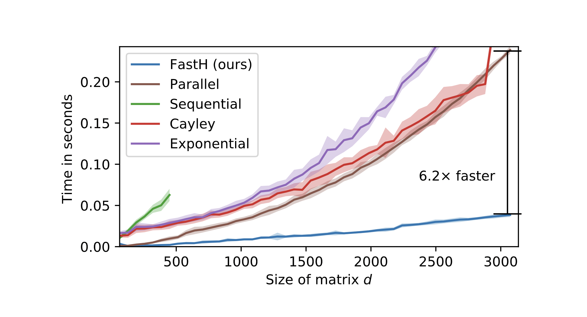
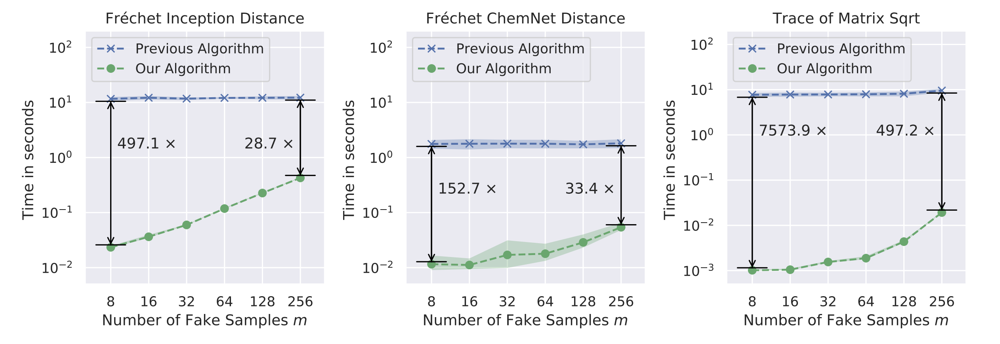
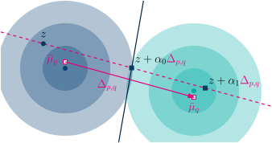

Fast and Explainable Deep Neural Networks
- 5 sections
- 34 images
- Slide numbers and questions.
Introduction
Source: OpenAI blog

Source: Tenor.com

Source: Fortune.com
Scaling is expensive
Generative language models

Source: NVIDIA Developer blog
-
Paper 1 What if Neural Networks Had SVDs?
Alexander Mathiasen, Frederik Hvilshøj, Jakob Rødsgaard Jørgensen, Anshul Nasery, and Davide Mottin. In NeurIPS, 2020. - Paper 2 Backpropagating through Fréchet Inception Distance
Alexander Mathiasen and Frederik Hvilshøj. CoRR, abs/2009.14075, 2020. - Paper 3 ECINN: Efficient Counterfactuals from Invertible Neural Networks. Frederik Hvilshøj, Alexandros Iosifidis, and Ira Assent. In BMVC, 2021.
- Paper 4 On Quantitative Evaluations of Counterfactuals. Frederik Hvilshøj, Alexandros Iosifidis, and Ira Assent. CoRR, abs/2111.00177, 2021.
Efficient Neural Network Training
RQ1: How can the efficiency of machine learning algorithms be improved?
What if Neural Networks had SVDs?
What if Neural Networks had SVDs?
\[ W\in \mathbb{R}^{d \times d} \]What if Neural Networks had SVDs?
\[ W\in \mathbb{R}^{d \times d} \] $ W = U \Sigma V^\intercal,$ $U,V,\Sigma \in \mathbb{R}^{d\times d}$What if Neural Networks had SVDs?
\[ W\in \mathbb{R}^{d \times d} \] $ W = U \Sigma V^\intercal,$ $U,V,\Sigma \in \mathbb{R}^{d\times d}$ \[ U^{-1} = U^\intercal, V^{-1} = V^\intercal \quad\Rightarrow\quad W^{-1} = V\Sigma U^\intercal \]The neural network setting
\[ y = \sigma( \color{blue}Wx ) \quad \color{blue}W^{\color{blue}-\color{blue}1}\sigma^{-1}(y) = x \]The neural network setting
\[ y = \sigma( \color{blue}U\color{blue}\Sigma \color{blue}V^{\color{blue}\intercal} x ) \quad \color{blue}V\color{blue}\Sigma^{\color{blue}-\color{blue}1}\color{blue}U^{\color{blue}\intercal}\sigma^{-1}(y) = x \]The neural network setting
\[ y = \sigma( \color{blue}U\color{blue}\Sigma \color{blue}V^{\color{blue}\intercal} x ) \quad \color{blue}V\color{blue}\Sigma^{\color{blue}-\color{blue}1}\color{blue}U^{\color{blue}\intercal}\sigma^{-1}(y) = x \]$O(d^3)$ to $O(d)$
Problem: Gradient descent on $U$ and $V$ does not maintain orthogonality.
Problem: Gradient descent on $U$ and $V$ does not maintain orthogonality.
Solution: Different parametrization of $U$ and $V$ [93]
For $X \in \mathbb{R}^{d\times m}$, complexity is $O(d^2m)$ üëç
Very sequential üëé
Matrix Inversion

Problem:
Given $X$ and $v_1, ..., v_d$, can we compute the product $$\left[\prod_{i=1}^{d} I-2 \frac{v_{i} v_{i}^{\top}}{\left\|v_{i}\right\|_{2}^{2}}\right] X=\left[\prod_{i=1}^{d} H_{i}\right] X$$ in $O(d^2n)$ time with less than $O(d)$ sequential work?
Solution:
Compute sub-products in parallel.
Solution:
Compute sub-products in parallel.
Computing $W$ and $Y$ takes $O(dt^2)$ time and $t$ sequential matrix-matrix multiplications.
Solution:
Compute sub-products in parallel.
Computing $W$ and $Y$ takes $O(dt^2)$ time and $t$ sequential matrix-matrix multiplications.
Step 1: Compute sub-products in parallel.
$ \begin{array}{cccc} H_{1} \ldots H_{t} & H_{t+1} \ldots H_{2 t} & \ldots & H_{d-t+1} \ldots H_{d} \\ \| & \| & \ldots & \| \\ G_{1}=I-W_{1} Y_{1}^{\top} & G_{2}=I-W_{2} Y_{2}^{\top} & \ldots & G_{d / t}=I-W_{d / t} Y_{d / t}^{\top} \end{array} $
Solution:
Compute sub-products in parallel.
Computing $W$ and $Y$ takes $O(dt^2)$ time and $t$ sequential matrix-matrix multiplications.
Step 1: Compute sub-products in parallel.
$ \begin{array}{cccc} H_{1} \ldots H_{t} & H_{t+1} \ldots H_{2 t} & \ldots & H_{d-t+1} \ldots H_{d} \\ \| & \| & \ldots & \| \\ G_{1}=I-W_{1} Y_{1}^{\top} & G_{2}=I-W_{2} Y_{2}^{\top} & \ldots & G_{d / t}=I-W_{d / t} Y_{d / t}^{\top} \end{array} $
Step 2: Compute full product sequentially.
\[ UX = G_1(G_2(...(G_{d/t}X)...) \]Time complexity:
Asymptotic running time:
| Step 1: | Computing $d/t$ products: | $O(d/t \cdot dt^2) = O(d^2t)$ |
| Step 2: | Computing the full product: | $O(d/t \cdot dtm) = O(d^2m)$ |
| Total: | If $t = m$ | $O(d^2m)$ ✅ |
Time complexity:
Asymptotic running time:
| Step 1: | Computing $d/t$ products: | $O(d/t \cdot dt^2) = O(d^2t)$ |
| Step 2: | Computing the full product: | $O(d/t \cdot dtm) = O(d^2m)$ |
| Total: | If $t = m$ | $O(d^2m)$ ✅ |
Sequential work.
| Step 1: | Computing $d/t$ products: | $O(t)$ |
| Step 2: | Computing the full product: | $O(d/t)$ |
| Total: | $O(t + d/t)$ ✅ |
SVD as weight matrices
SVD for matrix operations

Backpropagating through Fréchet Inception Distance
Which of these fake samples look more realistic?
Source: Our paper
CIFAR10 Fréchet Inception Distance
Source: Papers with code
Computing the FID
Let $A(x)$ be an "encoding network."
Real samples
Fake samples
Computing the FID
Let $A(x)$ be an "encoding network."
Real samples
Fake samples
Computing the FID
Let $A(x)$ be an "encoding network."
Real samples
Fake samples
Computing $\operatorname{tr}\left( \sqrt{ \Sigma_{r} \Sigma_{f} } \right)$ is expensive:
Computing $\operatorname{tr}\left( \sqrt{ \Sigma_{r} \Sigma_{f} } \right)$ is expensive:
Compute Schur decomposition: $\Sigma_r\Sigma_f = QVQ^\intercal$.
Compute $U$ such that $U^2 = V$.
Then $\sqrt{ \Sigma_r \Sigma_f } = QUQ^\intercal$.
Complexity: $O(d^3)$ üëé
Problem: $\Sigma_r \Sigma_f$ is too big! ($d \times d$)
Problem: $\Sigma_r \Sigma_f$ is too big! ($d \times d$)
Solution: find equivalent computation of smaller matrix. ($m \times m$)
Solution: find equivalent computation of smaller matrix. ($m \times m$)
Real samples
Fake samples
Solution: find equivalent computation of smaller matrix. ($m \times
Real samples
Fake samples
Solution: find equivalent computation of smaller matrix. ($m \times
Real samples
Fake samples
Reduces time complexity from $O(d^3)$ to $O(m^3)$ $^*$
$^*$ Full running time is $O(d^2 m + m^3)$.Example
Typically $n = m = 10 000$ and $d = 2048$. Original ($2048^3$) $\ll$ FastFID ($10 000^3$) üî•
Example
Typically $n = m = 10 000$ and $d = 2048$. Original ($2048^3$) $\ll$ FastFID ($10 000^3$) üî•
During training $n = 10 000$, $m=128$ and $d = 2048$. Original ($\underset{\sim 10s}{2048^3}$) $\gg$ FastFID ($\underset{\sim0.1s}{128^3}$) üèÜ
Example
Typically $n = m = 10 000$ and $d = 2048$. Original ($2048^3$) $\ll$ FastFID ($10 000^3$) üî•
During training $n = 10 000$, $m=128$ and $d = 2048$. Original ($\underset{\sim 10s}{2048^3}$) $\gg$ FastFID ($\underset{\sim0.1s}{128^3}$) üèÜ
Using FID as a loss
Efficient Neural Network Training
- Two fast algorithms üèÉüí®
- $\Rightarrow$ potentially improving generative models üߨ
- $\Rightarrow$ potentially improving explainability methods ü™Ñ
Counterfactual Examples
RQ2: How can generative models be utilized for explaining neural networks?
Counterfactual Examples
"Not Smile"
Counterfactual Examples
"Smile"
Applications
- Medical imaging (teaching doctors)
- Drug discovery (drugs without side effects)
- Model bias inspection (surveillance)
Solution #1
- Gradient descent [19, 53, 87]
Solution #1
- Gradient descent [19, 53, 87]
Solution #1
- Gradient descent [19, 53, 87]
Example: [53]
Solution #1
- Gradient descent [19, 53, 87]
Example: [53]
Solution #1
- Gradient descent [19, 53, 87]
Example: [53]
Require many iterations (1000) üê¢ and low quality images üëé
Solution #2
- Generative models [22, 38, 75, 79]
Solution #2
- Generative models [22, 38, 75, 79]
Solution #2
- Generative models [22, 38, 75, 79]
ECINN: Efficient Counterfactuals from Invertible Neural Networks
ECINN: Efficient Counterfactuals from Invertible Neural Networks
Idea: use invertible classifier $f(x)$ to get analytical solution.
ECINN: Efficient Counterfactuals from Invertible Neural Networks
Idea: use invertible classifier $f(x)$ to get analytical solution.
Conditional Normalizing Flow
ECINN: Efficient Counterfactuals from Invertible Neural Networks
Idea: use invertible classifier $f(x)$ to get analytical solution.
ECINN: Efficient Counterfactuals from Invertible Neural Networks
Idea: use invertible classifier $f(x)$ to get analytical solution.
Internal representation $f(x)$
| Method | Fast | Validity | High quality | Analytic |
| Iterative [19, 53, 87] | ||||
| Generative [19, 53, 87] | - | |||
| ECINN (ours) |
Experiments

Experiments
Rows: Input, [87], [53], ECINN.
| Method | Mean (std) | n |
| [87] | 21.64 | 100 |
| [53] | 16.85 | 100 |
| ECINN (ours) | 0.003 | 10 000 |
ECINN: Efficient Counterfactuals from Invertible Neural Networks
- Fast algorithm üèÉüí®
- Analytical solution ü§©
Evaluating Counterfactual Examples
RQ3: How are methods for explaining neural networks best evaluated?
Objective: Quantify "goodness" of counterfactual examples.
Objective: Quantify "goodness" of counterfactual examples.
Procedure
What properties do we want?
What metrics are there?
What is missing?
What properties do we want?
- Validity *
- Sparsity *
- Proximity *
- Diversity *
- Realistic changes
* Originates from [63]
What properties do we want?
- Validity *
- Minimal
- Realistic changes
- Diversity *
* Originates from [63]
What metrics are there?
What metrics are there?
Target-class validity
What metrics are there?
Target-class validity
The "interpretability metrics"
What metrics are there?
Target-class validity
The "interpretability metrics"
FID
Note that we use other embedding network.
What is missing?
What is missing?
| Method | TCV |
| GB | 96% |
| GL | 81% |
| ECINN | 99% |
What is missing?
| Method | TCV |
| GB | 96% |
| GL | 81% |
| ECINN | 99% |
Solution: Oracle score.
Let $o(x)$ be a different "softmax-classifier". \[ \text { Oracle }=\frac{1}{|X|} \sum_{x \in X} \mathbb{1}_{[f(c(x))=o(c(x))]} \]Solution: Oracle score.
| Method | TCV | Oracle |
| GB | 96% | 82% |
| GL | 81% | 32% |
| ECINN | 99% | 90% |
Extending Idea to Multi-class Datasets
Extending Idea to Multi-class Datasets
Extending Idea to Multi-class Datasets

CelebA-HQ classes.
ECINN: Efficient Counterfactuals from Invertible Neural Networks
- Insights into what metrics capture üìå
- Two new metrics üìä
Increasing data complexity
| Dataset | IM1 | IM2 | FID |
| FakeMNIST | 1.22, 1.03, 0.68 | 0.49, 1.23, 0.21 | 252, 309, 0.12 |
| MNIST | 0.99, 0.99, 0.88 | 0.55, 0.53, 0.17 | 50, 508, 90 |
| CelebA-HQ | 0.98, 0.99, 1.03 | 0.47, 0.52, 0.53 | 205, 484, 98 |
Conclusion
- Two fast algorithms üèÉüí®
- $\Rightarrow$ potentially improving generative models üߨ
- $\Rightarrow$ potentially improving explainability methods ü™Ñ
- Fast counterafactual explanations üèÉüí®
- Analytical solution ü§©
- Insights into what metrics capture üìå
- Two new metrics üìä
References:
- [8] Christian Bischof and Charles Van Loan. The WY Representation for Products of Householder Matrices. SIAM Journal on Scientific and Statistical Computing, 1987.
- [19]
- [22]
- [38]
- [53]
- [63]
- [75]
- [79]
- [82]
- [93] Jiong Zhang, Qi Lei, and Inderjit S. Dhillon. Stabilizing gradients for deep neural networks via efficient SVD parameterization. In ICML, 2018. 8, 10, 11, 12